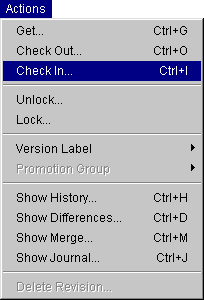

You can navigate the Serena ChangeMan Version Manager interface using shortcut and mnemonic keys. These keys provide quick access to functions listed on menus or in dialog boxes.
If a function can be completed using shortcut keys, the keys are listed on the menu next to the function, as shown below.

To use shortcut keys, press both keys at once. Shortcut keys are available for the following functions:
| Function: | Shortcut Keys: |
| Create Project | CTRL+P |
| Add Workfiles | CTRL+F |
| Set Workfile Location | CTRL+W |
| Check In | CTRL+I |
| Check Out | CTRL+O |
| Get | CTRL+G |
| Refresh | CTRL+R |
| Select All | CTRL+A |
| Show Differences | CTRL+D |
| Show History | CTRL+H |
| Show Merge | CTRL+M |
| Show Journal | CTRL+J |
| View Properties | CTRL+Enter |
Mnemonic keys are available in message boxes. Press Y for Yes or N for No.